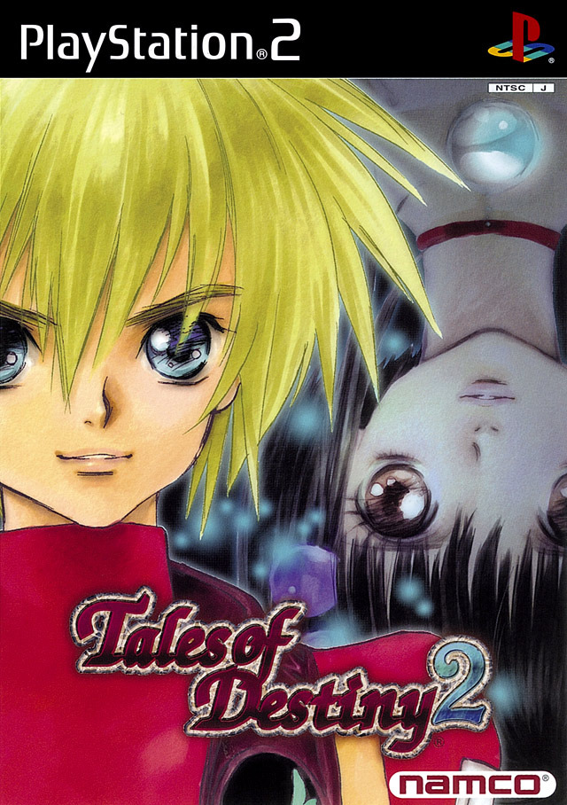

テイルズオブディスティニー２
 2002年11月28日発売プラットフォーム：PS2 , PSP
シリーズ第4作目。
本作からプラットフォームがPS2に変更された。
前々作である『テイルズオブディスティニー』の続編となっているが、開発元が異なるのが原因かストーリーの辻褄が合わない部分がある。（後に『ディスティニー』側のリメイクで修正された部分もある。）
本作は歴代シリーズの中でも戦闘の難易度が高めに設定されている。とあるボス戦ではアイテムを使用するとカウンターで秘奥義（必殺技）を出されてしまうため、実質アイテム使用禁止状態でボスに挑まなければならない等、プレイヤーの行動を制限するような仕様も見受けられる。しかし、やりこみ要素として戦闘中の行動の良し悪しによって“GRADE”と呼ばれるポイントが加算／減算され、二週目開始時にポイントを使うことで様々な恩恵を得られるシステムや、ストーリー中の幕間のような役割を果たすスクリーンチャットの登場など、現在のシステムに受け継がれている要素も多い。
ストーリーは続編にあたるもののため多くは触れないが、本作主人公は前々作の主人公の息子となっている。他にも前々作のキャラクターの関係者や本人が登場するため、あまり本作だけをプレイすることはおすすめできない。